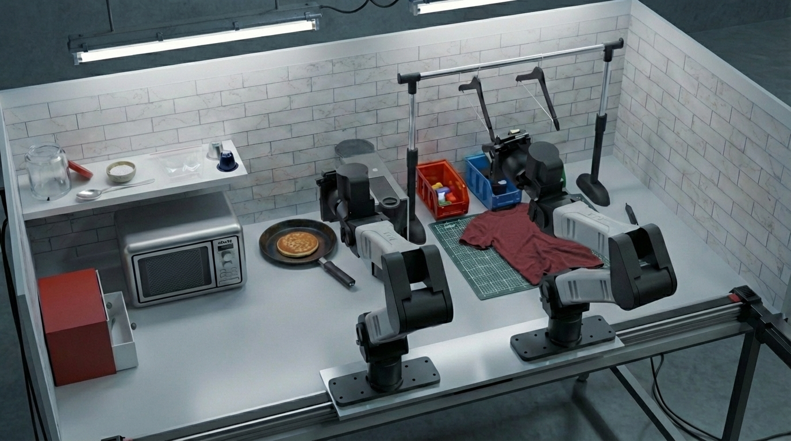

DexBench
Next-gen benchmark for dexterous bimanual manipulation. 11 long-horizon tasks on a compact table-top with mobile camera, distractor objects, and low-cost compliant arms. Designed to expose the gap between saturating sim benchmarks and real-world humanoid performance.
Shh... still in stealth mode